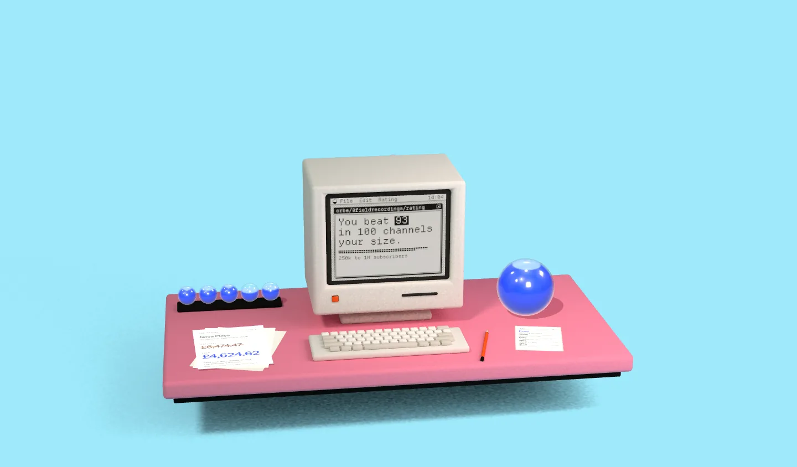

Your channel rated
rated against
creators your size.

On the monitor, a window called orbe/@fieldrecordings/rating says: You beat 93 in 100 channels your size.
On the paper, the record for Nova Plays, September 2026 ad revenue: estimate £6,474.47, struck through. Paid £4,624.62.
Independently calculated by Orbe. Every creator and figure on this desk is a made-up example, computed live by the Orbe engine.